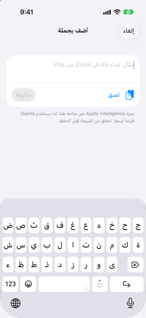

الدليل › تسجيل المال
اكتب جملة
قل ما حدث بكلماتك الخاصة ويمتلئ النموذج من Damla.
اكتب ما حدث - "غداء 45 في Zuma من Visa" - ويقرأه Damla إلى مبلغ وحساب وفئة وتاريخ. تتحقق مما وجده وتؤكد بنقرة واحدة. لا يُحفظ شيء حتى تفعل.
إنه نموذج يمتلئ من تلقاء نفسه من كلماتك الخاصة. وإذا قرأ Damla شيئًا خطأً أو فوّت جزءًا، تُكمل الباقي في النموذج العادي، بدءًا مما فهمه.

متى تستخدمه
- عندما دفعتَ للتو ثمن شيء أو استلمتَ مالًا، وأردت تسجيله دون ملء نموذج.
- عندما وصلك رسالة بنك أو بريد إلكتروني عن المال لم يلتقطه Damla تلقائيًا: الصقه هنا.
- عندما تريد تحويل شراء ببطاقة إلى أقساط بقول ذلك، مثل "دفعة مدرسة من بطاقة Everyday، الآن على 6 أشهر".
- عندما تريد تدوين فاتورة: الرسالة التي تخبر أن فاتورة جاهزة أو مستحق الدفع، مع مبلغها أو تاريخ استحقاقها، تُتذكَّر كفاتورة قادمة.
خطوة بخطوة
- انقر زر علامة الزائد على اليوم أو النشاط.
- انقر اكتب جملة. تفتح شاشة الإضافة بجملة ولوحة المفاتيح جاهزة.
- اكتب ما حدث بكلماتك الخاصة، مع المبلغ واسم حساب أو بطاقة، وتاريخًا إن لم يكن اليوم. المثال المعروض في الحقل هو "مثال: غداء 45 في Zuma من Visa". يمكنك أيضًا كتابة التزام، مثل وضع شراءٍ على أقساط.
- انقر متابعة. يعرض الزر "Reading…" بينما يقرأ Damla الكلمات، ثم يعرض القسم المسمى "تحقق واحفظ" ما وجده.
- إن كان كل شيء صحيحًا، انقر حفظ. وإن كان جزء ناقصًا أو غير واضح، يقول Damla ما يحتاجه ويعرض أكمله، الذي يفتح النموذج بما كان قد فُهم مملوءًا مسبقًا. أنهه هناك واحفظ.
اختصاران:
- لصق يضع الحافظة في الحقل ويقرأها في الحال، دون نقرة أخرى. هذا مخصص للرسائل النصية للبنك أو رسائل البريد الإلكتروني التي نسختَها.
- الرسالة التي تصل من اختصارك (Shortcut) أو من ورقة المشاركة أو من الوارد تفتح هذه الشاشة نفسها وقد قُرئت مسبقًا: أول ما تراه هو قسم "تحقق واحفظ".
ما يمكنك رؤيته في تحقق واحفظ
- دفعة أو دخل عادي: المبلغ، والحسابات التي ينتقل بينها، والمستفيد، والتاريخ. انقر حفظ.
- شيء يبدو مسجَّلًا مسبقًا: يحذر القسم "يبدو أن هذا مسجَّل من قبل." ويعرض "حفظ على أي حال". تحقق أولًا - فالدفع مرتين وارد.
- شراء حُوِّل إلى أقساط: تظهر القراءة القسط وعدد الأشهر وتاريخ البداية وأي رسوم، مع الملاحظة "هذا ينشئ التزامًا، لذا يرجى مراجعته." الزر هو أنشئ الخطة. يظل اقتراحًا حتى تنقره.
- شيء غير مكتمل: "أحتاج إلى مزيد من المعلومات:" يسرد الأسئلة، مثل "كم المبلغ؟" أو "من أي حساب يأتي؟"، وأكمله يفتح النموذج.
- إشعار فاتورة: "هذا إشعار فاتورة." يتذكره Damla كفاتورة متوقعة. ورسوم البطاقة التي تدفعها لاحقًا هي العملية الحقيقية الوحيدة، لذا لا يُحسب أي شيء مرتين.
- إشعار كشف حساب بطاقة: "هذا إشعار كشف حساب بطاقة." انقر راجع كشف الحساب لتستعرضه.
إذا كانت الجملة تنبيه بنك بمبالغ مطبوعة في الشكل المعتاد، تقرأها الشيفرة (code). فقط الجمل التي لا تبدو تنبيهًا تمر عبر قارئ الجُمل.
من الجيد أن تعرف
بعد أن تحفظ، يتذكر Damla كيف صنّفت المستفيد، فالرسالة التالية من المتجر نفسه تُصنَّف في تلك الفئة من تلقاء نفسها.
ذو صلة
هل هناك شيء غير واضح أو ناقص؟ اكتب إلى support@raveniq.ai واذكر الصفحة.